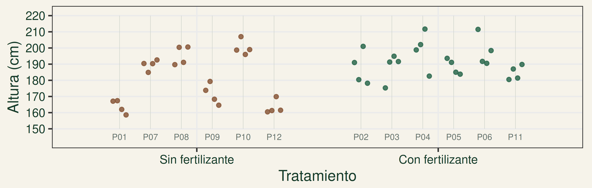
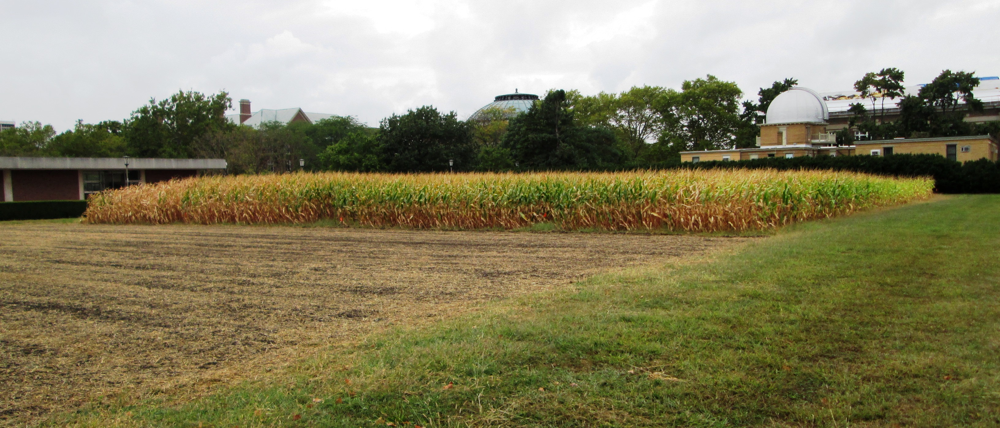
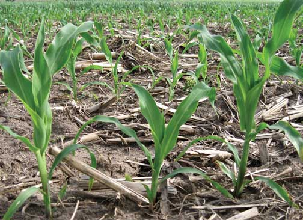
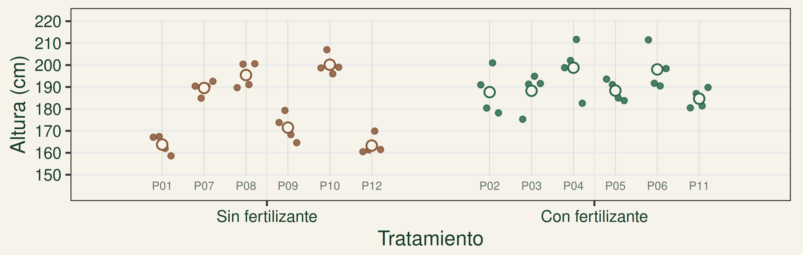
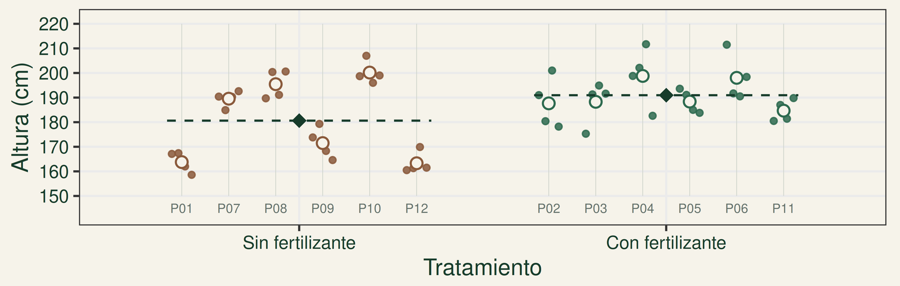
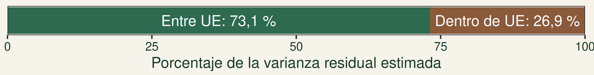
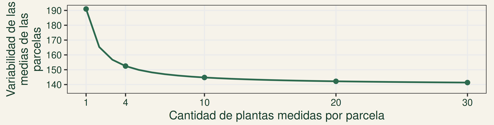
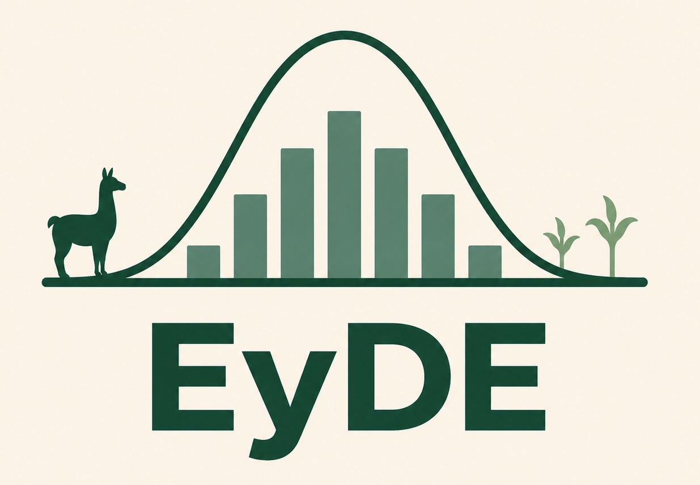

Submuestreo y pseudorreplicación
¿Más observaciones significan más réplicas?
2 de noviembre de 2026
Una pregunta agronómica

Morrow Plots · Beyond My Ken · CC BY-SA 4.0 · Fotografía de contexto, ajena al ensayo simulado.
¿La aplicación de un fertilizante aumenta la altura promedio de las plantas de maíz?
Población estadística: todas las parcelas de maíz bajo condiciones agronómicas comparables a las del ensayo, más allá de las 12 parcelas estudiadas.
¿Qué unidades intervienen en el experimento?
Población estadística: todas las parcelas de maíz bajo condiciones agronómicas comparables a las del ensayo, más allá de las 12 parcelas estudiadas.
Sin fertilizante Con fertilizante · Círculo ámbar: planta seleccionada · Esquema, no escala espacial
UE: cada parcela
12 parcelas en el ensayo: 6 por tratamiento (DCA).
UM: cada planta
Cuatro plantas elegidas al azar por parcela; medimos su altura en cm.
Observaciones y réplicas: contemos
2tratamientos
12parcelas
4plantas medidas por parcela
¿Cuántas observaciones hay en total?
¿Cuántas observaciones hay en total?
12 × 4 = 48 observaciones.
¿Cuántas observaciones hay por tratamiento?
¿Cuántas observaciones hay por tratamiento?
6 × 4 = 24 observaciones.
¿Cuántas réplicas experimentales hay por tratamiento?
¿Cuántas réplicas experimentales hay por tratamiento?
6 UE: las seis parcelas asignadas a ese tratamiento.
Las cuatro plantas de una parcela son submuestras.
Población y muestra dentro de una UE
UE: parcela P01.
Unidad de muestreo: cada planta seleccionada.
Estamos mirando sólo el interior de P01.
Población dentro de esta UE: todas sus plantas.
Muestra dentro de esta UE: cuatro plantas seleccionadas al azar.
Parámetro: altura media de todas las plantas de P01.
Estadístico: media de sus cuatro plantas medidas.
Las submuestras estiman la respuesta media de una UE. Esta población interna no es la población de interés para inferir el efecto del fertilizante.
¿Por qué realizamos submuestreo?
Muchos elementos en una UE
♧ ♧ ♧ ♧ ♧ ♧
Medir algunas plantas de una parcela para estimar su altura media.
Medir todo es impracticable
▧ ▧ ▧
Estimar el rendimiento mediante pequeños cuadros de cosecha.
La medición es destructiva
Planta → raíces → biomasa
Extraer algunas plantas para medir la biomasa de raíces.
Interesa la heterogeneidad interna
↕ ↕ ↕ ↕
Conocer cuánto varía la altura entre plantas de una misma parcela.
¿Cómo seleccionamos las submuestras?
A · Las cuatro más altas
B · Cuatro elegidas al azar
Misma población esquemática en ambos dibujos · ámbar: plantas seleccionadas
¿Cuál permite estimar la altura media de la parcela con menos sesgo?
B. La selección aleatoria simple evita elegir deliberadamente plantas por su altura. La selección de submuestras afecta la calidad de la estimación.
Las plantas de una parcela no son todas iguales

12Lori Abendroth · Iowa State University · Northeast Iowa Research and Demonstration Farm, 2006. Fotografía ilustrativa, ajena a la simulación.
¿Por qué pueden tener alturas diferentes?
- Diferencias individuales.
- Competencia entre plantas.
- Heterogeneidad del suelo.
- Disponibilidad local de agua y nutrientes.
Recibir el mismo tratamiento no implica responder exactamente igual.
Tres niveles en un mismo gráfico


• Plantas:
cuatro observaciones dentro de cada UE.
○ Medias de UE:
promedio de las cuatro plantas de cada parcela.
◆ Media de tratamiento:
diferencia entre tratamientos.
El modelo estadístico con submuestreo
\[Y_{ijk}=\mu+\color{#2d6a4f}{\tau_i}+\color{#8a5a3b}{\varepsilon_{ij}}+\color{#536a89}{\gamma_{ijk}}\]
\(Y_{ijk}\): respuesta de la planta \(k\) de la UE \(j\) del tratamiento \(i\).
\(\mu\): media general · \(i=1,2\); \(j=1,\ldots,6\) en cada tratamiento; \(k=1,\ldots,4\).
\(\tau_i\)
Efecto del tratamiento.
\(\varepsilon_{ij}\)
Variación entre unidades experimentales del mismo tratamiento.
\(\gamma_{ijk}\)
Variación entre plantas dentro de una UE.
Las plantas de una UE comparten el mismo término de error experimental.
¿Qué aporta medir más plantas?
A · Una planta por parcela
B · Cuatro plantas por parcela
Más plantas pueden mejorar la estimación de cada media de parcela. En ambos casos seguimos teniendo 12 UE y 6 réplicas por tratamiento.
¡Ojo! Podemos cometer un error si…
Si analizamos las 48 plantas como réplicas experimentales independientes, ¿qué estamos ignorando?
INCORRECTO
48 plantas = 48 réplicas experimentales.
Pseudorreplicación.
CORRECTO
12 UE = 12 réplicas en total:
6 por tratamiento.
Cuatro plantas medidas dentro de cada UE.
Una misma UE, condiciones compartidas
- Comparten condiciones ambientales y de manejo.
- Reciben conjuntamente el tratamiento.
- No constituyen réplicas experimentales independientes.
La replicación se identifica a partir de cómo se asignó el tratamiento, no mediante una prueba de correlación entre plantas.
Las consecuencias de la pseudorreplicación
- Sobreestimar la información independiente.
- Subestimar la incertidumbre.
- Obtener valores p artificialmente pequeños.
- Aumentar el riesgo de rechazar H₀ cuando es verdadera.
Incorrecto · 24 “réplicas” por tratamiento
p = 0,0090 → rechaza H₀
Correcto · 6 parcelas por tratamiento
p = 0,1775 → no rechaza H₀
Mismos datos simulados, α = 0,05. Es un caso posible; el análisis incorrecto no siempre será significativo ni el correcto dará siempre un p mayor.
Dos caminos correctos de análisis
48 observaciones individuales
↙↘
Camino A · Promediar
Cuatro plantas por UE → 12 medias.
ANOVA convencional sobre las medias de UE.
Camino B · Conservar
Mantenemos las 48 observaciones.
ANOVA con submuestreo que reconoce la estructura jerárquica.
En este ejemplo completamente balanceado, ambos caminos dan el mismo F y el mismo p para tratamientos.
Camino A: una media por unidad experimental
Parcela P01
167,1 · 167,4 · 162,0 · 158,6 cm
→
163,775 cm
una media de UE
P01
163,78 cm
163,78 cm
P02
187,65 cm
187,65 cm
P03
188,28 cm
188,28 cm
P04
198,80 cm
198,80 cm
P05
188,38 cm
188,38 cm
P06
198,03 cm
198,03 cm
P07
189,55 cm
189,55 cm
P08
195,45 cm
195,45 cm
P09
171,50 cm
171,50 cm
P10
200,18 cm
200,18 cm
P11
184,68 cm
184,68 cm
P12
163,30 cm
163,30 cm
Repetimos el promedio en cada UE. El ANOVA recibe 12 medias: seis por tratamiento.
Respeta la replicación, pero el análisis de esas medias por sí solo no separa la variabilidad dentro de las UE.
Camino B: ANOVA con submuestreo
Las 48 observaciones permiten distinguir error experimental (EE) y error de muestreo (EMu).
| FV | gl | CM | F | p |
|---|---|---|---|---|
| Tratamientos | 1 | 1283,401 | 2,104 | 0,1775 |
| UE dentro de tratamientos (EE) | 10 | 609,884 | — | — |
| Dentro de UE (EMu) | 36 | 51,340 | — | — |
| Total | 47 | — | — | — |
Para tratamientos: F = CM tratamientos / CM del EE.
1283,401 / 609,884 = 2,104 · p = 0,1775
La fila ámbar es el denominador correcto. No se usa el CM del EMu para probar tratamientos.
Tres ANOVA de los mismos datos
A · Incorrecto: 48 plantas independientes
| FV | gl | SC | CM | F | p |
|---|---|---|---|---|---|
| Tratamientos | 1 | 1283,401 | 1283,401 | 7,429 | 0,0090 |
| Residual incorrecto | 46 | 7947,098 | 172,763 | — | — |
| Total | 47 | 9230,499 | — | — | — |
Residual que mezcla niveles · rechaza H₀ al 5%.
B · Correcto: 12 medias de UE
| FV | gl | SC | CM | F | p |
|---|---|---|---|---|---|
| Tratamientos | 1 | 320,850 | 320,850 | 2,104 | 0,1775 |
| Entre medias de UE (EE) | 10 | 1524,711 | 152,471 | — | — |
| Total | 11 | 1845,561 | — | — | — |
Seis medias por tratamiento · no rechaza H₀.
C · Correcto: 48 observaciones con submuestreo
| FV | gl | SC | CM | F | p |
|---|---|---|---|---|---|
| Tratamientos | 1 | 1283,401 | 1283,401 | 2,104 | 0,1775 |
| UE dentro de tratamientos (EE) | 10 | 6098,843 | 609,884 | — | — |
| Dentro de UE (EMu) | 36 | 1848,255 | 51,340 | — | — |
| Total | 47 | 9230,499 | — | — | — |
F y p idénticos a B · no rechaza H₀.
En B, las SC y CM de tratamientos y EE son las de C divididas por 4. El cociente F no cambia. No comparar sus CM directamente sin este ajuste de escala.
¿Qué aporta conservar las observaciones?
Si ambos análisis dan el mismo resultado para tratamientos, ¿qué aporta el ANOVA con submuestreo?
Dentro de las UE
\[\widehat{\sigma}^2_{EMu}=CM_{EMu}\]51,340 cm²: variabilidad entre plantas dentro de una UE.
Entre UE del mismo tratamiento
\[\widehat{\sigma}^2_{\mathrm{UE}}=\frac{CM_{\mathrm{EE}}-CM_{\mathrm{EMu}}}{4}\](609,884 − 51,340) / 4 = 139,636 cm².
Para estimar el componente entre parcelas, restamos ambos cuadrados medios y dividimos por 4.
El número 4 corresponde a las plantas medidas por parcela (UE). El valor esperado del CM del EE incluye la variabilidad dentro de las parcelas más 4 veces el componente entre UE:
\[E[CM_{\mathrm{EE}}]=\sigma^2_{\mathrm{EMu}}+4\sigma^2_{\mathrm{UE}}\]
¿Cómo se distribuye la variabilidad residual?

Entre UE del mismo tratamiento
139,636 / (139,636 + 51,340) × 100
= 73,1 %
Entre plantas dentro de las UE
51,340 / (139,636 + 51,340) × 100
= 26,9 %
Descomponemos la variabilidad residual después de considerar tratamientos. No son porcentajes de la SC total.
Como en DBCA, buscamos reconocer fuentes de heterogeneidad; aquí usamos componentes de varianza, no el porcentaje de SC asociado a bloques.
¿La variabilidad entre UE supera a la interna?
Comparar los errores
\[H_0:\sigma^2_{EE}=\sigma^2_{EMu}\qquad H_1:\sigma^2_{EE}>\sigma^2_{EMu}\] \[F=\frac{CM_{EE}}{CM_{EMu}}\]Formulación del apunte de Silvia Sühring (2021).
Otra pregunta: tratamientos
\[F_{\text{tratamientos}}=\frac{CM_{\text{tratamientos}}}{CM_{EE}}\]Compara las medias de los tratamientos; utiliza otro denominador.
Con nuestros datos: F = 609,884 / 51,340 = 11,879.
gl = 10 y 36 · p = 1,07e-08. Rechazamos H₀ (α = 0,05).
La variabilidad entre UE del mismo tratamiento supera a la variabilidad entre plantas dentro de ellas: hay evidencia de un componente adicional entre UE.
No rechazar H₀ no demostraría igualdad. Esta prueba no determina si hay pseudorreplicación: eso depende del diseño experimental.
El submuestreo puede usarse en distintos diseños
DCA
A
•••
•••
B
•••
•••
B
•••
•••
A
•••
•••
UE: cada parcela asignada a A o B.
DBCA
Bloque 1
A
•••
•••
B
•••
•••
Bloque 2
B
•••
•••
A
•••
•••
UE: parcela dentro de cada bloque.
Parcelas divididas
Parcela principal · A₁
B₁
•••
•••
B₂
•••
•••
Factor A: UE = parcela principal.
Factor B: UE = subparcela.
Puntos = plantas submuestreadas.
El diseño organiza la asignación de tratamientos. El submuestreo obtiene varias observaciones dentro de las UE; no es un diseño independiente.
También puede incorporarse a cuadrados latinos y experimentos factoriales.
¿Más parcelas o más plantas por parcela?
Presupuesto: 60 mediciones de altura y dos tratamientos.
A · 10 parcelas × 6 plantas
5 réplicas por tratamiento
•••
•••
•••
•••
•••
•••
•••
•••
•••
•••
•••
•••
•••
•••
•••
•••
•••
•••
•••
•••
•••
•••
•••
•••
•••
•••
•••
•••
•••
•••
B · 20 parcelas × 3 plantas
10 réplicas por tratamiento
•••
•••
•••
•••
•••
•••
•••
•••
•••
•••
•••
•••
•••
•••
•••
•••
•••
•••
•••
•••
¿Cuál elegirían para estimar con mayor precisión la diferencia entre tratamientos?
Con variabilidad entre parcelas, B suele aportar más precisión. La decisión también depende de la variación interna y de los costos de establecer parcelas y medir plantas.
¿Qué ganamos midiendo más plantas por parcela?
Al medir más plantas, estimamos mejor la media de cada parcela.


Valores esperados según el modelo del ejemplo, con los componentes estimados de los datos simulados.
Medir más plantas por parcela mejora la estimación de su media, pero no reemplaza tener más parcelas.
Para comparar tratamientos, necesitamos suficientes parcelas independientes por tratamiento.
Volvamos a la pregunta inicial
¿Más observaciones significan más réplicas?
No necesariamente: podemos medir más sin aumentar las UE independientes.
- La unidad experimental determina la replicación del tratamiento.
- Las submuestras caracterizan mejor cada UE, pero no reemplazan las réplicas.
- El análisis debe respetar la estructura del experimento.
Tres tratamientos de riego, nueve parcelas (tres por tratamiento) y ocho plantas medidas por parcela:
¿Réplicas por tratamiento?
3 parcelas.
¿Submuestras por UE?
8 plantas.
¿72 plantas independientes?
Pseudorreplicación.

Andrés Tálamo - Estadística y Diseño Experimental - UNSa